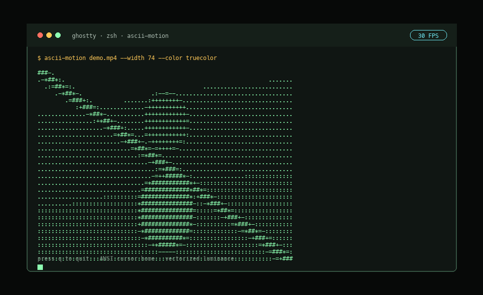

Video playback.
Terminal native.
Plays video files as real-time ASCII animations directly inside an ANSI-compatible terminal. Uses OpenCV for frame capture, NumPy for matrix processing, and ANSI for flicker-resistant rendering.
pipx install ascii-motion
brew install c4rl0s04/ascii-motion/ascii-motion

A terminal media pipeline
Structured as a media pipeline rather than a frame-by-frame print script. This keeps processing backends isolated from playback and terminal output concerns.
VideoCapture
OpenCV BGR frames
Resize
Terminal fit
Process
Luminance / Edges
Map
Dither + ASCII LUT
Render
ANSI output
Vectorized Core
NumPy maps luminance, edges, dithering, and ASCII lookup across full matrices. Python only joins completed rows for terminal output, eliminating slow pixel loops.
Flicker-Free Render
Frames use cursor-home ANSI sequences (\033[H) instead of full-screen clears. This keeps playback stable and avoids scrollback spam.
Wall-Clock Pacing
Pacing is based on accumulated wall-clock targets. If rendering falls behind, default playback skips late frames to keep the ASCII video aligned with real time.
Playback Options
Customize every aspect of the processing, sizing, timing, and visual output.
Source and Sizing
Use a video path or a camera index (0). By default, the output fits the current terminal size using a 0.5 character aspect correction, but you can explicitly override dimensions.
ascii-motion video.mp4 --width 120ascii-motion video.mp4 --fit-terminalascii-motion 0 --width 100Playback Timing
Override FPS, specify a start timestamp, set a duration, or loop indefinitely. Real-time frame skipping is enabled by default to preserve pacing, but can be disabled.
ascii-motion video.mp4 --start 10 --duration 5ascii-motion video.mp4 --loopascii-motion video.mp4 --no-frame-skipVisual Modes & Charsets
Choose between standard luminance ASCII, Sobel edge emphasis, or a hybrid blend. You can also apply ordered Bayer dithering or provide custom character ramps.
ascii-motion video.mp4 --mode edgesascii-motion video.mp4 --mode hybrid --dither orderedascii-motion video.mp4 --charset dense --invertANSI Color Output
While plain text is the fastest, you can enable terminal color output for richer visualizations, which applies to both live playback and ANSI exports.
ascii-motion video.mp4 --color truecolorascii-motion video.mp4 --color 256ascii-motion video.mp4 --color grayscaleSnapshots & Exporting
Non-interactive modes bypass alternate screens and keyboard controls, allowing for pipeline integration and direct file exports.
Metadata Preview
Print source metadata and selected visual settings.
ascii-motion video.mp4 --previewSave One Frame
Render a single timestamp to stdout.
ascii-motion vid.mp4 --frame-at 5 > f.txtExport Plain Text
Separates frames with form feeds (\f).
ascii-motion vid.mp4 --export out.txtExport ANSI File
Includes cursor-home and color sequences for terminal replay.
ascii-motion vid.mp4 --export-ansi out.ansExport Frame Directory
Write each frame as a numbered text file.
ascii-motion vid.mp4 --export-frames ./dirKeyboard Controls
The app stays stdout-native, but it behaves like a focused media player during interactive playback.
--quit-key--pause-key--seek-seconds--backward-key / --forward-key--help-keyTerminal Compatibility & Performance
Compatibility depends on ANSI support, terminal throughput, and font metrics. Terminal output can be the main bottleneck at large widths, especially with color enabled.
Benchmarking
To measure the pipeline on your machine without HUD overhead, run:
ascii-motion video.mp4 --width 120 --benchmark